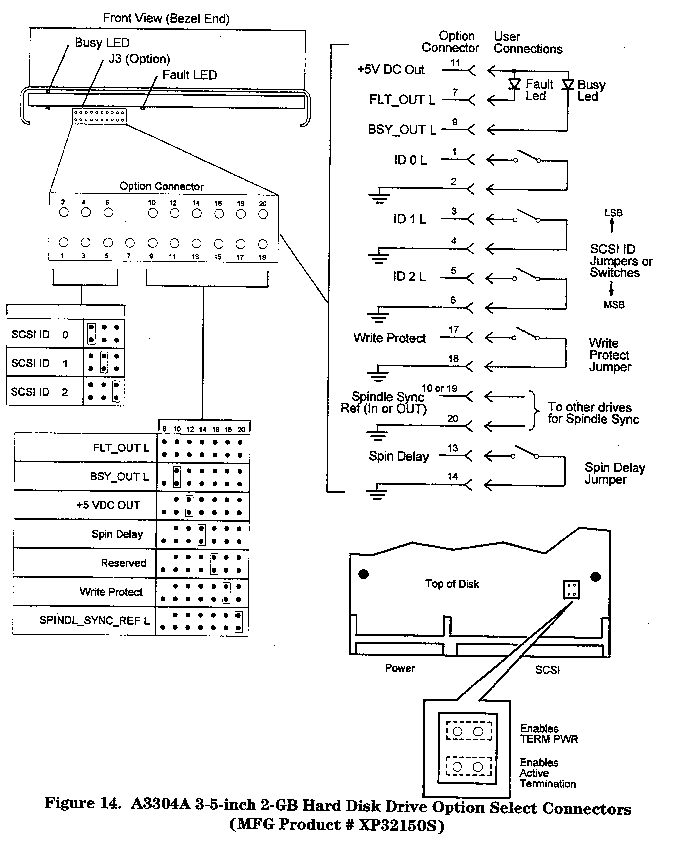

Caution
The A3304A represents two interchangeable 2-GB disk drives:
The drives are fixed, sealed hard drives intended for primary mass storage applications. These drives are SCSI-2 compliant single-ended devices ith embedded controllers. The drives are functional and replacement equals. The information provided below references the manufacturing product number ST32550N. Information about manufacturing product number XP32150S is here.
The drive options and SCSI ID (address) are set on the J3 (see the following Figure). Table 1 shows the pin-sets for the options available with the A3304A 3.5-inch hard disk drive (MFG Product #XP32150S). The actual settings depend upon the system in hich the disk drive is installed and its location within that system. See your service manual or CE handbook for specific configuration and jumper setting information.
Table 2 provides a functional description of the J3 jumpers. A pin-set is either shorted (with a jumper installed) or open (without a jumper).
| Function | Connector | Pin-Set |
| SCSI ID 0 | J3 | 1-2 |
| SCSI ID 1 | J3 | 3-4 |
| SCSI ID 2 | J3 | 5-6 |
| FLT_OUT L | J3 | 7 |
| No Conector | J3 | 8 |
| BSY_OUT L | J3 | 9 |
| SPINDLE_SYNC_REF L | J3 | 10 or 9 |
| +5 VDC OUT | J3 | 11 |
| Reserved | J3 | 12 |
| Spin Delay | J3 | 13-14 |
| Reserved | J3 | 15 |
| LOGIC_GND L | J3 | 16 |
| Write Protect | J3 | 17 |
| LOGIC_GND L | J3 | 18 |
| LOGIC_GND L | J3 | 20 |
Table 1: J3 Option Jumpers for A3304A 3.5-inch Hard Disk Drive (MFG Product #XP32150S)
NOTE
Write Protect mode and the Spin Delay mode are supported but not simultaneously. The present drive mode is determined by the state of the Write Protect mode page bit. The factory default is Spin Delay mode.

Figure 1: A3304A 2-GB Drive ID and Option Header (MFG #XP32150S)
| Function | Connector | Pin-Set | Configuration |
| SCSI ID 0 | J3 | 1-2 | Defines SCSI ID bit 0. Open=0, Jumpered=1 |
| SCSI ID 1 | J3 | 3-4 | Defines SCSI ID bit 1. Open=0, Jumpered=1 |
| SCSI ID 2 | J3 | 5-6 | Defines SCSI ID bit 2. Open=0, Jumpered=1 |
| FLT_OUT L | J3 | 7 | Provides active low connection for cathode of fault LED |
| No Conector | J3 | 8 | |
| BSY_OUT L | J3 | 9 | Provides active low connection for anode of fault LED |
| SPINDLE_SYNC_REF L | J3 | 10 or 9 | Provides connection for Spindle Sync REF signal. |
| +5 VDC OUT | J3 | 11 | Provides +5VDC out. |
| Reserved | J3 | 12 | |
| Spin Delay | J3 | 13-14 | Defines if Spin Delay is enabled (jumpered). |
| Reserved | J3 | 15 | |
| LOGIC_GND L | J3 | 16 | Logic Ground |
| Write Protect | J3 | 17 | Defines if Write Protect is enbaled (jumpered). |
| LOGIC_GND L | J3 | 18 | Logic Ground |
| LOGIC_GND L | J3 | 20 | Logic Ground |
Table 2: J3 Address/Option Connector Configurations (MFG Product# XP32150S)